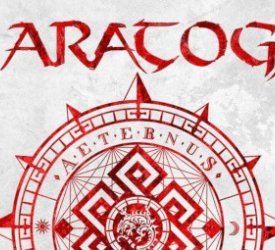

[ABRIL] Saratoga concierto en vivo
Gijón, 12/04/2019, 21:00h
Lugar:Sala Acapulco - Casino
C/Fernández Vallín, 5 33205 - Gijón
Teléfono: 985 34 34 34
Fecha:12 de Abril de 2019
Anticipada: 20€ / Taquilla: 23€
Horario: 21:00h
Concierto de Saratoga, uno de los grupos más importantes de Metal en castellano.
[ABRIL] Corin Tellado: El Espectáculo
Gijón, 13/04/2019, 20:30h
Lugar:Teatro Jovellanos
C/Cabrales, 82 33201 - Gijón
Teléfono: 985 18 29 29
Fecha:13 de Abril de 2019
Butaca y Entresuelo: 22€ / General: 18€
Horario: 20:30h
La muerte de Corín Tellado deja entre sus más fieles lectores un amargo sabor de injusticia, pues a pesar de ser la novelista 'más leída del mundo en lengua castellana...', después de Cervantes y de la Biblia según la UNESCO, la crítica especializada prácticamente la ignoró y nunca le concedió los pomposos galardones reservados a los 'grandes'.
Dirección: Laura Iglesia.
Por Higiénico Papel Teatro, Teatro del Fin del Mundo y Ambigú Media Broadcast.
[ABRIL] Érase una vez una ilusión
Gijón, 16/04/2019, 18:00h

Lugar: Centro Municipal Integrado Pumarín-Gijón/Xixón Sur
C/ Ramón areces, 7 33211 - Gijón
Teléfono: 985 18 16 40
Fecha: 16 de Abril de 2019
Precio: Entrado gratuita
Horario: 18:00h
De todos es sabido, la magia, se encuentra en los libros. Existen también libros de magia. Y cuentos llenos de magia. Pero en este caso, el Mago Pelayo, extrae la magia de una gran libro, que puede ser mágico. Mágico por las historias que lleva dentro, o también porque dentro de este Gran Libro (grande, también de tamaño físico) se encuentran muchos números de magia.
Érase una vez..., una ilusión, es un espectáculo dirigido sobre todo a niños de infantil y primaria. En él se cuentan historias por todos conocidas, unas veces son libros clásicos de la literatura. A través de estas historias, se interactúa con el público y se les hace descubrir que la magia existe, y más, dentro de los libros. 60 minutos de literatura y sueños dentro de un gran libro, que se adapta a la escenografía del espectáculo.
[ABRIL] Obra teatral Shakes-Vantes
Gijón, 23/04/2019, 19:30h
Lugar: Centro Municipal Integrado Pumarín-Gijón/Xixón Sur
C/ Ramón areces, 7 33211 - Gijón
Teléfono: 985 18 16 40
Fecha: 23 de Abril de 2019
Precio: Entrado gratuita
Horario: 19:30h
Shakespeare y Cervantes. Todo lo que siempre quisiste saber sobre ellos y el profesor nunca te enseño. Dos alumnos, repetidores, tripitidores, cuadru-quintu-sextupidores, (siempre por azares del destino) siguen anclados a las aulas de su tan 'queridísimo' Instituto, pero esto se acaba, a Miguel 'Miki' y a Guillermo 'Willy' les han dado la ÚLTIMA oportunidad, se lo juegan todo a una carta. La nueva orientadora del colegio les obliga a escoger a un autor sobre el cual basar un trabajo digno de una tesis universitaria, (que es donde realmente deberían estar a estas alturas), y aquí es donde empiezan los problemas, Miguel adora a Cervantes tanto como le fascina a Guillermo Shakespeare. Ambos alumnos se desvivirán por todos los medios posibles en convencer al otro de que su elección es la correcta. En un aula vacía y ante una audiencia inexistente enfrentarán en cruenta batalla dialéctica (y no tan dialéctia) a los dos genios de la literatura, darán vida a sus personajes, a su público, a sus musas...
[ABRIL] Cuarteto de Cremona
Gijón, 24/04/2019, 20:00h
Teatro Jovellanos
C/Cabrales, 82 33201 - Gijón
Teléfono: 985 18 29 29
24 de Abril de 2019
Precio: 30€
Horario: 20:00h
El Cuarteto de Cremona, formado por Cristiano Gualco y Paolo Andreoti (violines), Simone Gramaglia (viola), y Giovanni Scaglione (violonchelo), se fundó en el año 2000 en la Academia Stauffer, de Cremona. Valorado como una de las agrupaciones camerísticas italianas de mayor proyección internacional, el Cuarteto de Cremona ha participado en los festivales de música de cámara de Europa y América. Entre 2011 y 2014 fue 'artista residente' de la Sociedad de Cuartetos de Milán, en donde interpretó la integral de los cuartetos de Beethoven. Desde el 2011, los miembros del cuarteto son titulares de la titular de la cátedra de cuarteto en la Academia Stauffer, de Cremona. Organiza Sociedad Filarmónica de Gijón.
[ABRIL] Concierto de Bob Dylan
Gijón, 28/04/2019, 20:00h
Palacio de Deportes
Av. Dr. Fleming, SN 33203 - Gijón
Teléfono: 985 18 17 50
28 de Abril de 2019
Precio: 30€
Horario: 21:00h
Bob Dylan regresa a España. Bajo el aura de un espectáculo íntimo e irrepetible que se sumerge en el cancionero tradicional estadounidense, el músico que hizo historia al ganar el premio Nobel de Literatura vuelve a nuestro país con 8 fechas en las que podrás disfrutar de un Dylan nunca visto antes. El domingo 28 de abril visitará Gijón con una actuación en el Palacio de Deportes Adolfo Suárez.